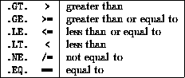

Next: Intrinsic Logical Operations
Up: Expressions and Assignment
Previous: Intrinsic Character Operations -
The following relational operators
deliver a LOGICAL result when combined with numeric
operands,

For example,
bool = i .GT. j
boule = i > j
IF (i .EQ. j) c = D
WHERE (a(:) /= 0) a(:) = 1/a(:)
For more information, click here

Next: Intrinsic Logical Operations
Up: Expressions and Assignment
Previous: Intrinsic Character Operations -
Adam Marshall ©University of Liverpool, 1996
Tue Nov 26 19:51:50 GMT 1996